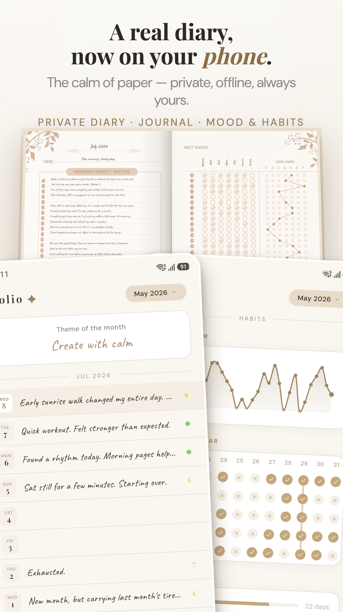
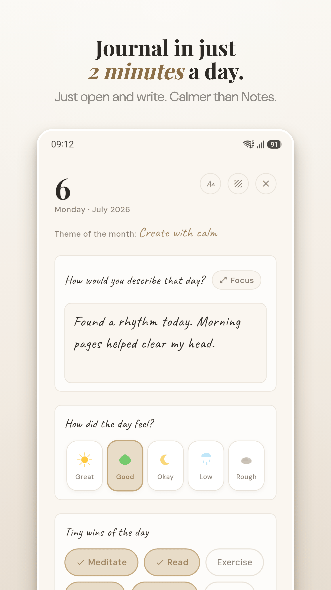
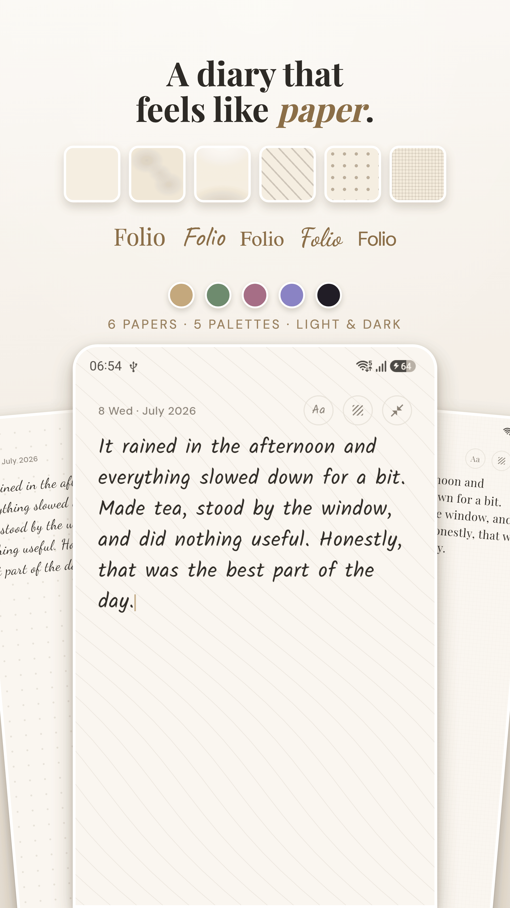
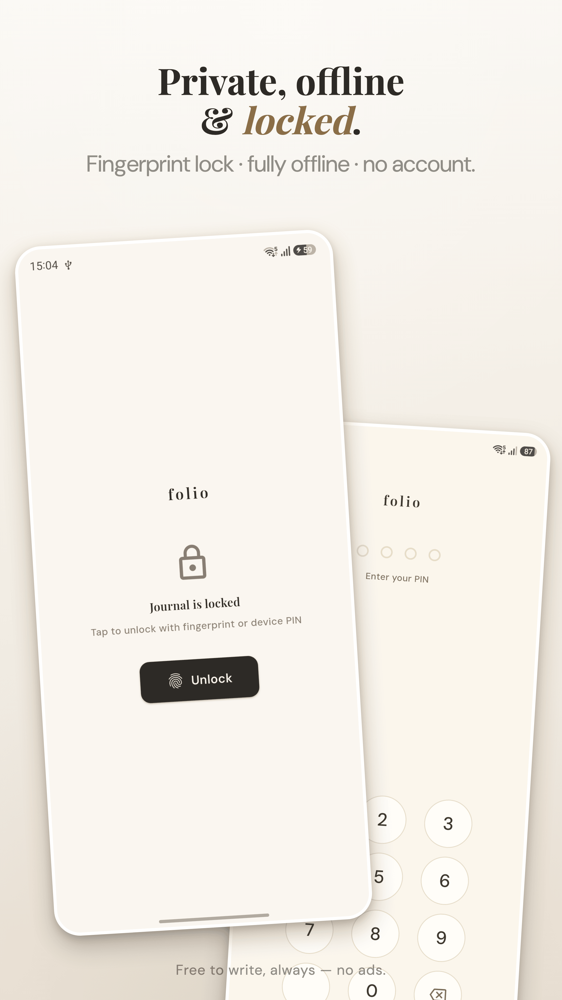
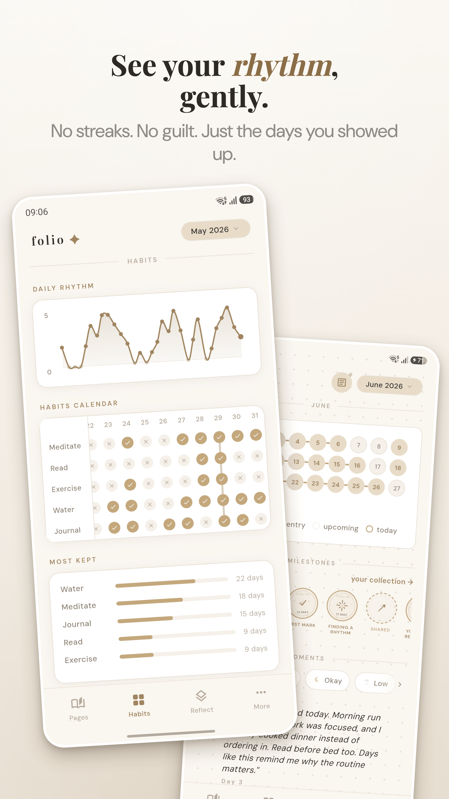
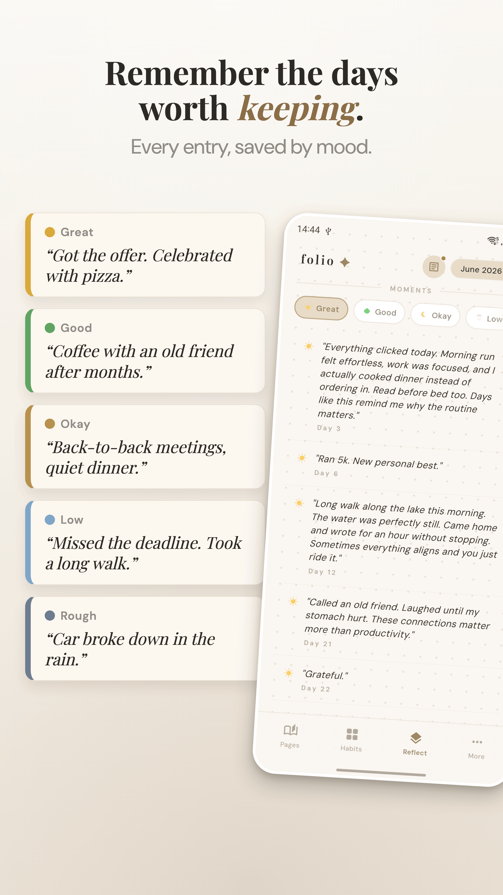
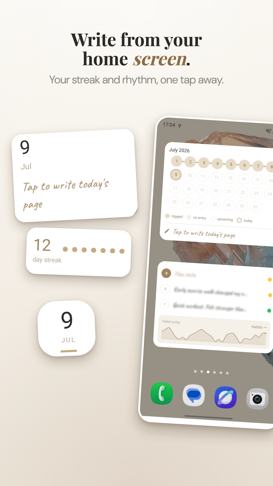
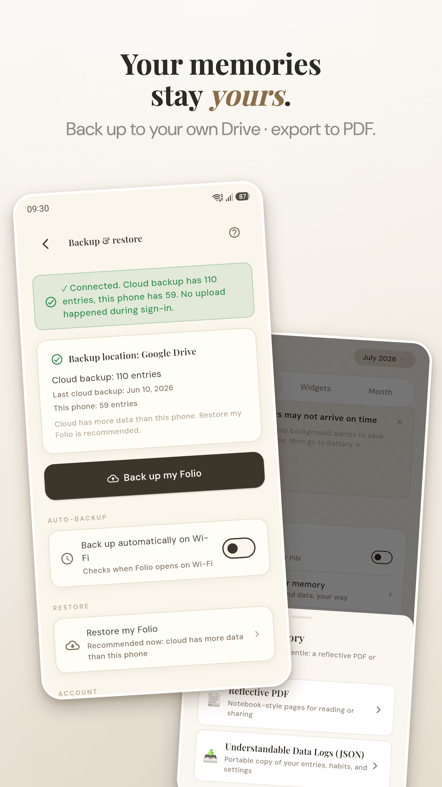

Folio — A Quiet Notebook for Closing the Day
Folio — A Quiet Notebook for Closing the Day
A few lines at the end of the day is plenty. Folio is a private daily journal that skips the scores and streaks, so missing a day never counts against you.
Screenshots








A Gentle Space for Your Thoughts
📝 Not sure what to write? Try our free Journaling Prompt Generator.
📓 Comparing journal apps? See the best free journal app guide.
Daily Journal with Focus Mode
Write a sentence or fill the whole page. Focus mode hides everything but your words, so nothing on screen pulls your attention away.
Mood Tracking Without Pressure
Tap an emoji for how the day felt and move on. There's nothing to score and no chart sizing up your week, just a quiet record you can look back on.
Tiny Habits, No Streaks
Keep a few small habits next to your entries. Miss a day and nothing breaks; you'll still see how things trend over the weeks.
Monthly Reflection & Themes
At the end of the month, Folio gathers your entries so the recurring themes are easy to spot: what kept coming up, and what actually mattered.
Make It Feel Like Yours
Choose from 5 color palettes and 6 paper textures. Make your notebook a place you want to return to.
Gentle Reminders
A soft nudge to write, never nagging. Set your preferred time. Snooze or skip without penalty.
Private & Secure
App lock with PIN or biometric. Your entries stay on your device. No account, no cloud syncing unless you choose.
Google Drive Backup
Optional backup to your Google Drive. Your data, your control. Export to plain text anytime.
Start Your Quiet Ritual Tonight
Journaling is free to start, with premium features when you want to go deeper. No ads, and no feed to perform for.
Frequently Asked Questions
Is Folio free?
Yes. Folio is 100% free with no ads, no subscriptions, and no in-app purchases. All features are available immediately.
Is my journal private?
Absolutely. All entries are stored locally on your device only. Folio includes app lock with biometric or PIN protection. There is no cloud, no account, no data collection.
Does Folio need internet access?
No. Folio works completely offline. Your entries, moods, and habits are stored on your phone and never uploaded anywhere.
What can I track in Folio?
Daily journal entries, mood (emoji or scale), custom habits, and monthly reflections that summarize your patterns.
How is Folio different from other journal apps?
Folio is gentle and pressure-free. No streaks that punish you for missing a day, no social features, no gamification. Just a quiet space for honest reflection.
Does Folio have an app lock?
Yes. Biometric (fingerprint/face) and PIN lock to keep your journal private from anyone who picks up your phone.
Can I export my journal data?
Yes. Folio lets you export your entries so your data is never trapped in the app. You own your words.
Related Articles
-
Why Most People Fail at Journaling (And How to Stick With It)
The science-backed approach that actually works for busy people.
-
Daily Journal vs Mood Tracker: Why You Need Both
How combining journals and mood tracking reveals insights neither can show alone.
From the blog
Why Journaling Fails and How to Stick With It
The 5 reasons journaling fails — and the science-backed fix.
Daily Journal vs Mood Tracker: Why You Need Both
How combining the two gives you the full picture.
30 Journaling Prompts for Anxiety
Ground, untangle, and reframe anxious thoughts.
35 Journaling Prompts for Self-Discovery
Explore your values, patterns, and what you really want.